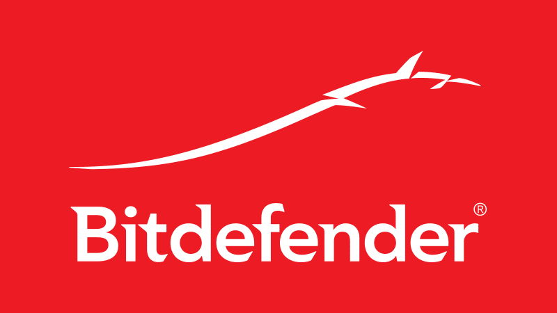

Protivirusni programi
Kaj so protivirusni programi?
Protivirusni program je računalniški program oziroma skupek programov, ki so namenjeni za preprečevanje, iskanje, odkrivanje in odstranjevanje programskih virusov in druge zlonamerne programske opreme, kot so črvi in trojanski konji. Ta orodja so bistvenega pomena za uporabnike, saj se računalnik brez protivirusnega programa lahko okuži takoj, ko je povezan z internetom. Ker se dnevno pojavlja več tisoč novih oblik zlonamerne programske opreme, morajo podjetja, ki izdelujejo protivirusne programe, le-te konstantno posodabljati in enako morajo storiti tudi njihovi uporabniki
Vrste protivirusnih programov
1. Total AV
Brezplačno protivirusno skeniranje vam omogoča hitro prepoznavanje in odstranjevanje škodljive zlonamerne programske opreme, neželenih aplikacij in pomislekov glede zasebnosti. Preprosto prenesite in namestite našo aplikacijo in TotalAV™ vas bo pozval, da zaženete pametni pregled, ki vam bo zagotovil analizo škodljivih groženj in ranljivosti ter pomoč pri odpravljanju.

2. Norton
Norton AntiVirus je protivirusni ali protizlonamerni programski izdelek, ki ga je ustanovil Peter Norton, razvija in distribuira pa ga Symantec
(zdaj Gen Digital) od leta 1990 kot del družine izdelkov za računalniško varnost Norton.
3. Bitdefender
Bitdefender is a cybersecurity leader delivering best-in-class threat prevention, detection, and response solutions worldwide.
4. NordVPN
NordVPN is the gateway to a secure and private access to the internet. It works by enveloping all of your online activities in a layer of encryption, while also hiding information about your virtual location.
5. SurfShark Antivirus
Surfshark antivirus gives you the option to run three kinds of malware scan. First, you can run a quick scan, which examines files in your Documents, Downloads, and Desktop folders. For even more peace of mind, you can run a full scan, which looks at absolutely every file on every drive on your device.